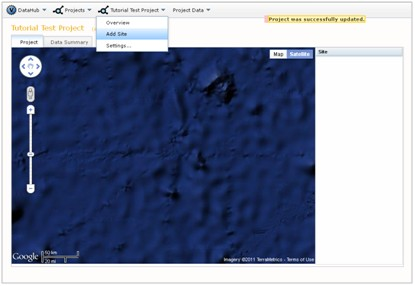
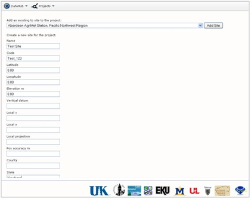
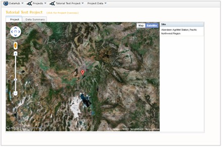

After you successfully create a new project, you will need to add some sites to it. From the Project_Show page, select "Add Site" from the (Project_Name) dropdown menu.

You will be directed to a site creation page (see below). Here, you need to decide how to add a site to your new project. You have two options: 1) add a previously described site (from another project) to your project, or 2) define a new site. If you add a site from another project, only the site information will be added to your project. The data associated with that site in the other project will not be accessible to you unless you upload it into your new project. If you create a new site, you must define the following fields : Name, Code, Latitude, Longitude, State.

After saving your new site information, you will be returned to the Project_Show page. Your new site will appear on the project map and in the site list on the right side of the map. To add additional sites, simply repeat this process. If you wish to add multiple sites programmatically, please refer to the section on API Functions.

Copyright © 2011, Montana State University
Created with the Freeware Edition of HelpNDoc: Full featured Documentation generator